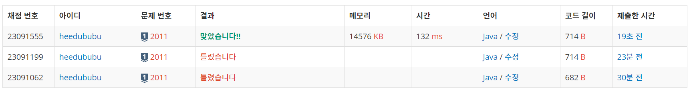

문제
https://www.acmicpc.net/problem/2011
( ᐛ )و 도전
1. 설계
- dp[i]: i번째 문자까지 만들 수 있는 암호의 경우의 수(인덱스는 1부터 시작)
- i번째가 0인 경우 앞 문자가 1 또는 2라면 가능하고, 아니라면 잘못된 암호이므로 0을 리턴한다.
- 앞 문자를 체크하여 경우의 수를 센다.
2. 구현 (성공 코드)
1
2
3
4
5
6
7
8
9
10
11
12
13
14
15
16
17
18
19
20
21
22
23
24
25
26
27
28
29
30
31
32
33
34
35
36
37
38
39
40
41
42
43
import java.util.*;
/**
* @author HEESOO
*
*/
class Main {
public static void main(String[] args) {
Scanner sc=new Scanner(System.in);
String s=sc.next();
if(s.charAt(0)=='0') { // 시작이 0이면 잘못된 암호
System.out.println("0");
return;
}
long[] dp=new long[s.length()+1];
dp[0]=dp[1]=1;
for(int i=2;i<=s.length();i++) {
char ch=s.charAt(i-1); // 현재 체크하는 문자
char prev=s.charAt(i-2); // 앞 문자
if(ch=='0') {
if(prev=='1' || prev=='2') dp[i]=dp[i-2]%1000000;
// 현재 문자 0을 앞과 연결할 수 없다면 잘못된 문자열이므로 종료
else break;
}
else {
// 앞 문자가 0이면 경우의 수 변화 없음
if(prev=='0') dp[i]=dp[i-1]%1000000;
else { // 앞 문자와 연결할 수 있는지 체크
// 앞 문자와 연결했을 때 숫자를 int형으로 출력
int temp=(prev-'0')*10+(ch-'0');
// 암호 코드안에 들어오면 경우의 수 갱신
if(1<=temp && temp<=26) dp[i]=(dp[i-2]+dp[i-1])%1000000;
else dp[i]=dp[i-1]%1000000;
}
}
}
System.out.println(dp[s.length()]%1000000);
}
}
3. 결과
 성공٩(˘◊˘)۶
4. 설명
- DP를 이용한다
- dp에는 인덱스 1부터 사용한다.
- dp[i]: input의 i-1번째 문자까지의 암호 해석 경우의 수.
- 암호 길이가 5000 이하이므로 DFS로는 풀 수 없다. 처음부터 하나씩 문자를 체크하며 경우의 수를 따지는 방법으로 문제를 해결할 수 있다. 따라서 DP를 이용한다.
- 예시: 25114
- dp[1]=1 (2)
- dp[2]=2 (2 5, 25)
- dp[3]=2 (2 5 1, 25 1)
- dp[4]=4 (2 5 1 1, 25 1 1, 25 11, 2 5 11)
- dp[5]=6 (2 5 1 1 4, 25 1 1 4, 25 1 14, 25 11 4, 2 5 11 4, 2 5 1 14)
- 여기서 dp[i]=dp[i-2]+dp[i-1]을 알 수 있다.
- 0인 경우를 생각한다
- 시작이 0이면 잘못된 경우이므로 0을 출력한다.
- 중간에 0이 나오면 prev(i-1, 앞 문자)를 체크한다. prev가 1 또는 2라면 prev에 0을 붙이면 된다.
- 예시: 1203
- dp[1]=1
- dp[2]=2
- dp[3]=1
- dp[4]=1
- 여기서 dp[3]은 1이 되어야 한다. dp[2]까지는 (1 2, 12)였지만 3번째가 0으로 (1 20)만 가능하다. 따라서 dp[i]는 dp[i-1]이 아닌 dp[i-2]를 가져온다.
- prev가 1, 2가 아니라면 잘못된 문자이므로 break.
- prev가 0이면 새로운 경우의 수를 만들 수 없으므로 dp[i]=dp[i-1] (ex. 1230, 1091)
- 1000000으로 나눈다
- 문제 조건에서 1000000으로 나눈 나머지를 출력하라고 했으므로 dp[i]를 받을 때 마다 해당 값으로 나눈다.
- 사실 dp[i]가 갱신되는 (dp[i]=dp[i-2]+dp[i-1])에서만 해줘도 된다.